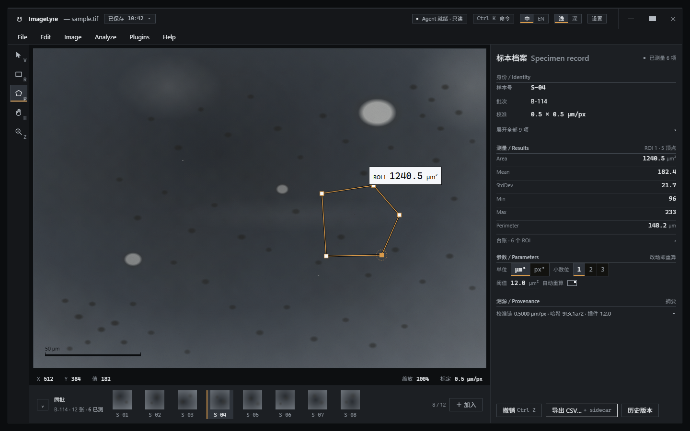

01两个基准
双击任意图片可放大；报告为汇总视图，源文件见 §08。

稿 30 · 亮色基准 · 双击放大

稿 31 · 暗色基准 · 双击放大
| Key | 值 | 说明 |
|---|---|---|
| theme.default | light | 首次启动跟随系统，默认亮色 |
| theme.light | 稿 30 | 中性白表面，无米色 |
| theme.dark | 稿 31 | 与 30 同结构，只换颜色与材质 |
| layout.panel.right | 400px | 可拖 320–560，步长 8 |
| layout.sections | 5 | 身份、测量、参数、溯源、操作 |
| layout.identity.rows | 3 / 9 | 默认三行，展开全部九项 |
| layout.fit | 900px | 五段与操作同屏，不滚动 |
02外观原则
产品口径，对应 product-appearance.md §1–§13。
| Key | 规则 |
|---|---|
| appearance.intuition | 像一张被灯照亮的实验台：样本是唯一发光的东西，工具伸手可及 |
| appearance.desktop | 桌面软件，不是网页；Windows 首发，三端共用设计 |
| appearance.lineage | 与 ImageJ 有渊源但必须超越：锚点保留，房间更安静 |
| appearance.canvas | 样本最大；界面不比样本更亮、更花 |
| appearance.signal | 一处信号色，只给当前与运行；不做文字色、不做填充 |
| appearance.material | 像玻璃与纸：细线、留白、明度；无圆角卡片、无投影、无玻璃拟态 |
| appearance.numbers | 数字是读数：等宽、右对齐、单位降级、列内禁千分位 |
| appearance.motion | 动效只解释空间；不弹跳、不旋转、不粒子 |
| appearance.negative | 医疗仪表盘、Web 后台、复古示波器、游戏 HUD、AI 聊天侧栏、蓝紫渐变 |
03排印
typography.md 2.0；四档，最低 11，中文只有 400。
| Key | 值（字号 / 行高） | 用途 |
|---|---|---|
| type.20 | 20 / 28 | 主读数，一屏一个 |
| type.16 | 16 / 24 | 面板标题 |
| type.13 | 13 / 20 | 正文、菜单、六项读数、按钮、窗口标题 |
| type.11 | 11 / 16 | 标签、段标题、表头、单位、状态、快捷键 |
| type.family.ui | Segoe UI Variable Text → Segoe UI → 平台无衬线 | 界面；中文回退 YaHei UI / PingFang SC |
| type.family.mono | Cascadia Mono → Consolas → 平台等宽 | 数字、坐标、哈希 |
| type.weight.regular | 400 | 中文全部、正文、读数 |
| type.weight.semibold | 600 | 只给拉丁标题、表头、选中项 |
| type.min | 11px | 硬下限；不出现 10 |
| type.tracking.caps | +1.10px | 拉丁大写段标题；中文不加字距 |
04间距
spacing.md；4px 基线、六级间距，右栏紧凑密度 12/12。
| Key | 值 | 用在哪 |
|---|---|---|
| space.1 | 4 | 图标与文字、标签与值 |
| space.2 | 8 | 相邻控件、字段上下 |
| space.3 | 12 | 按钮左右、紧凑段距 |
| space.4 | 16 | 面板内边、标题左右 |
| space.5 | 24 | 跨区段 |
| space.6 | 32 | 空态、命令面板分组 |
| size.titlebar | 44 | 标题栏 |
| size.menubar | 32 | 菜单栏 |
| size.rail | 44 | 左工具轨 |
| size.batch | 78 | 批次条 |
| size.statusbar | 28 | 画布下沿读数 |
| size.field.row | 28 | 字段、表行、按钮 |
| size.table.head | 24 | 表头 |
| density.panel | 12 / 12 | 右栏面板内边与段距（compact） |
05颜色
color-tokens.md 1.3；明暗同构，signal 只做线与标。
| Key | 亮 | 暗 | 用在哪 |
|---|---|---|---|
| color.surface.window | #F5F6F8 | #15171A | 窗口、标题、菜单、状态、左轨 |
| color.surface.panel | #FFFFFF | #1C1F23 | 面板、浮层、菜单 |
| color.surface.canvas | #E8EAED | #0D0F11 | 画布台面 |
| color.surface.input | #FFFFFF | #12120F | 输入、数值格 |
| color.surface.hover | #EAEDF0 | #2A2E33 | 悬停洗底 |
| color.line.divider | #DFE2E6 | #2A2E33 | 同级分隔 |
| color.line.border | #C2C7CD | #3C4249 | 控件、面板边框 |
| color.line.focus | #B83A24 | #D89A4A | 焦点下划线 1px |
| color.text.t1 | #141619 | #E9ECEF | 正文、读数、标题 |
| color.text.t2 | #4C5259 | #B5BBC2 | 字段值、状态 |
| color.text.t3 | #6A717A | #8C939B | 标签、单位、脚注 |
| color.text.disabled | #7B828A | #7E858D | 禁用，仍可读 |
| color.signal | #B83A24 | #D89A4A | 当前、运行；2px 线与标 |
| color.state.selected | #E2E6EA | #2E333A | 选中底，不反白 |
| color.state.disabled | #F1F3F5 | #1A1D21 | 禁用底 |
| color.canvas.ink | #F5F7FA | #F5F7FA | 画布叠加文字，不随主题 |
| color.canvas.edge | #0B0D0F | #0B0D0F | ROI 外沿，不随主题 |
| contrast.body | ≥ 6.3:1 | ≥ 6.3:1 | 正文与读数 |
06状态
state-model.md；五态五通道，控件只选形状。
| Key | 回答 | 唯一画法 |
|---|---|---|
| state.current | 画面里谁在被操作 | 沿形 2px 线 |
| state.selected | 命令将作用于谁 | 轴上的 2px 轨 + 一档中性底 |
| state.focus | 键盘落在哪 | 贴底下划线 1px |
| state.hover | 指针经过谁 | 只换底，不画线 |
| state.editing | 正在输入什么 | 光标 + 字段下划线 |
| state.precedence | 叠加顺序 | 编辑 > 焦点 > 选中 > 悬停 |
| state.maxLines | 同一元素最多几条线 | 2（一轨 + 一下划线） |
| state.negative | 三条不做 | 整行外框、色字、填充块 |
| binary.form | 二元选择 | 复选框 / 菜单勾选 / 两段式分段；没有开关 |
07控件
controls.md 1.1；尺寸只引 spacing，颜色只引 color-tokens，状态只引 state-model。

常用控件五态 · 双击放大
| Key | 值 | 用在哪 |
|---|---|---|
| control.button.height | 28 | 主 / 次 / 静默按钮 |
| control.button.padX | 12 | 按钮左右 |
| control.tool | 36 | 工具格 |
| control.icon | 16 | 图标 |
| control.field.height | 28 | 文本框、数值框、搜索 |
| control.segment.height | 28 | 分段控件 |
| control.check.box | 16 | 复选框 |
| control.table.head | 24 | 表头 |
| control.table.row | 28 | 表行 |
| control.scrollbar | 8 | 滚动条 |
| control.slider.track | 4 | 滑轨；手柄 16 |
| control.stepper | 24 | 步进按钮 |
主按钮 = 1px
line.border + T1；次 = 1px line.divider + T2；静默 = 无线 + T2。悬停与按下只换底。08交接
设计只定数值、角色与验收；实现归架构。
| Key | 归属 | 状态 |
|---|---|---|
| handoff.dark | 设计 | 稿 31 已收口，与 30 同构 |
| handoff.avalonia | 架构 | 资源键、字体回退、AtomUI 令牌、缩放机制 |
| handoff.compile | 架构 | SDK 10.0.404、App 还原、Cangming 包缓存 |
| handoff.flow | 设计 | 交互流未开始：打开→ROI→读数→导出→撤销 |
| source.typography | 设计 | typography.md 2.0 |
| source.spacing | 设计 | spacing.md |
| source.color | 设计 | color-tokens.md 1.3 |
| source.state | 设计 | state-model.md 0.1 |
| source.controls | 设计 | controls.md 1.1 |
| source.product | 产品 | product-appearance.md |